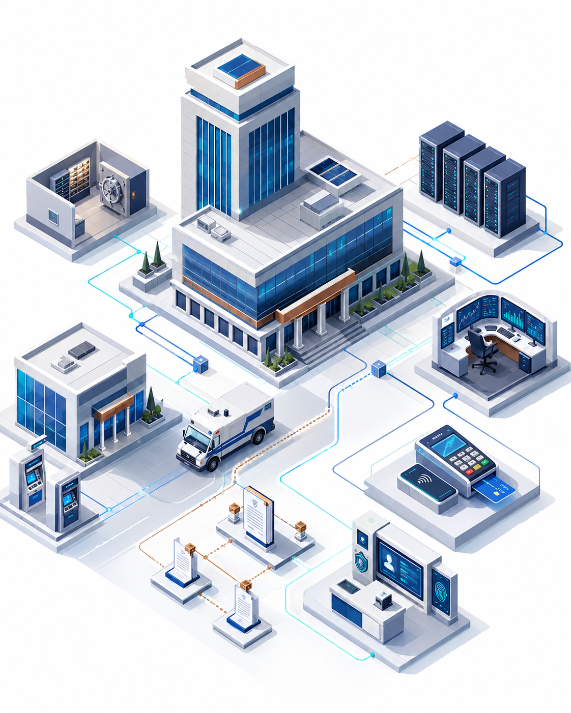

Interactive simulation
Almost everything an organization runs on is held together by cryptography. See what happens when it suddenly has to be changed — and how much of that change the organization can actually make.
Dotted words like this one have a definition: hover, tap or tab to them.

Step 1 of 4
Step 2 of 4
Every system on this map is held together by cryptography — keys that keep its data private, and certificates that prove which machine is which. Upgrading a system means replacing those. Watch how far down the organization that actually reaches.
Each one depends on cryptography to work: keys that keep its data private, certificates that prove which machine is which, signatures that prove nothing was altered. Upgrading a system means replacing those.
Step 3 of 4
This is not only about quantum computers. It is about whether an organization can change its cryptography at all, at short notice, on somebody else’s deadline.
The defaults describe a typical mid-sized organization. You can run the whole simulation without touching any of these.
Step 4 of 4
Result
Keep the same event, the same suppliers, the same people and the same records. Change only this: the organization can find its cryptography and replace it from one place, instead of system by system. That ability has a name — crypto agility.
Both rows use the same industry, the same event, the same suppliers and the same number of people. The only thing that differs is how centrally the organization can make a change.
Three things stopped this response: a supplier’s release schedule, equipment somebody has to physically replace, and systems nobody had written down. The first two are not yours to shortcut. The third — knowing what cryptography you have, and being able to replace it from one place — is a decision an organization gets to make. That decision is crypto agility.
·
Explore
Every number updates as you move a control. None of these are odds or predictions — they are a comparison between assumptions you choose.
Method
Every number on the result screen comes from the eight steps below. Nothing is hidden, nothing is random, and the same choices always produce the same answer.
A deterministic tabletop model: the same choices always give the same answer. The figures compare assumptions you selected against each other — they are not breach probabilities, loss estimates, or a forecast of when Q-Day will happen. Nothing you enter leaves this browser.